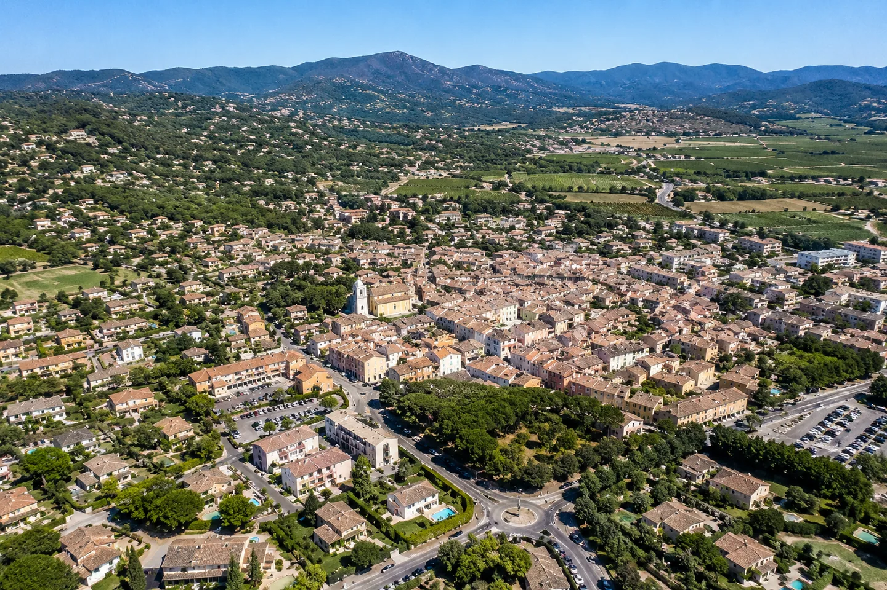
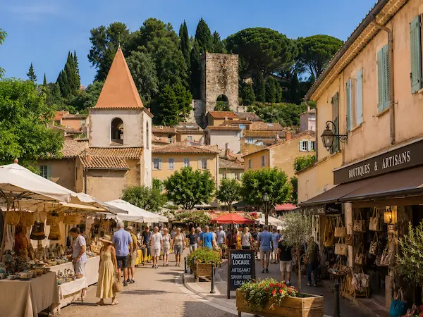
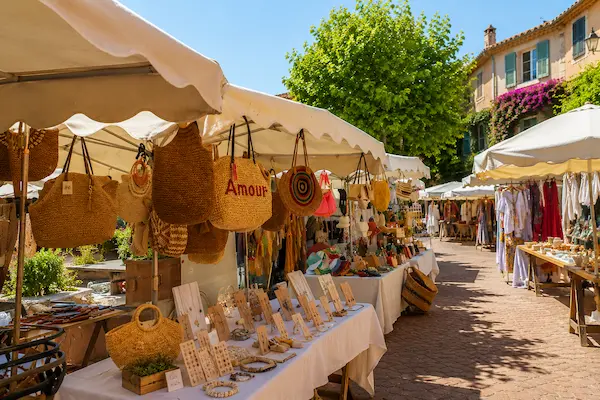
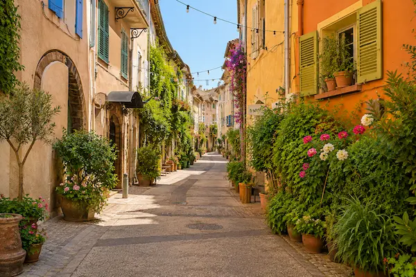

Web Essentiel
À partir de600€
- ✓ 3 pages professionnelles
- ✓ 100% responsive mobile
- ✓ Formulaire de contact
- ✓ SEO local Cogolin inclus
- ✓ Propriété 100% à vous

Artisan, électricien, coiffeur, restaurateur ou commerçant à Cogolin : votre site internet est votre premier outil de prospection locale. Je crée des sites sur mesure, rapides et référencés, pour les professionnels du Golfe de Saint-Tropez.
Cogolin est la commune la plus peuplée du Golfe de Saint-Tropez avec plus de 11 000 habitants. C'est le vrai centre économique du Golfe — là où vivent et travaillent les artisans, commerçants et prestataires de services qui font tourner l'économie locale toute l'année, bien au-delà de la saison estivale.
Réputée pour ses tapis, ses pipes en bruyère et son tissu artisanal dense, Cogolin abrite un nombre important d'entreprises artisanales, de commerces et de PME locales. Ces professionnels ont besoin d'un site internet qui les rend visibles sur Google pour les habitants du Golfe et les touristes qui cherchent un prestataire local.
Je suis basé à Saint-Tropez, à quelques minutes de Cogolin. Je connais le tissu économique local et je crée des sites adaptés aux besoins réels des artisans et commerçants du Golfe : rapides à charger, bien référencés sur "électricien Cogolin", "coiffeur Cogolin" et autres requêtes locales, et pensés pour générer des appels et des demandes de devis.
À Cogolin, votre client cherche d'abord sur Google. Être absent du web, c'est laisser vos concurrents prendre vos appels.Discutons de votre projet →

Cogolin concentre un tissu dense d'artisans, de commerçants et de PME locales. Chaque secteur a ses propres besoins en ligne — je maîtrise les spécificités de chacun.
Bouton d'appel direct mobile, formulaire de devis, galerie chantiers. Référencé sur "électricien Cogolin", "dépannage électrique Golfe Saint-Tropez". Idéal pour capter les urgences et les chantiers locaux.
Galerie de réalisations, prise de rendez-vous en ligne, présentation des prestations. Visible sur "coiffeur Cogolin", "salon de coiffure Golfe Saint-Tropez". Attire une clientèle locale et touristique.
Menu en ligne, photos des plats, module de réservation. Référencé sur "restaurant Cogolin", "où manger Golfe Saint-Tropez". Booste les réservations locales et touristiques.
Site rapide, mobile-first, avec bouton d'appel d'urgence visible. Référencé sur "serrurier Cogolin", "artisan bâtiment Golfe Saint-Tropez". Génère des appels immédiats.
Je crée également des sites pour les agences immobilières et conciergeries du Golfe de Saint-Tropez. Sites multilingues, galerie premium, formulaire de leads qualifiés.
Votre activité n'est pas listée ? J'accompagne tous les professionnels de Cogolin et du Golfe : plombiers, menuisiers, paysagistes, photographes, prestataires de services… Chaque site est conçu sur mesure.
Parlons de votre projet →Cogolin est la capitale artisanale du Golfe de Saint-Tropez. Chaque année, des milliers de touristes et de nouveaux résidents cherchent un électricien, un coiffeur, un plombier ou un artisan du bâtiment dans la zone. La grande majorité commence sa recherche sur Google.
Un artisan sans site internet invisible sur Google perd ces clients au profit de ses concurrents qui, eux, ont pris le temps de se rendre visibles en ligne. À Cogolin, la concurrence entre artisans est réelle — et ceux qui apparaissent en premier sur "électricien Cogolin" ou "serrurier Golfe Saint-Tropez" décrochent les appels.
Je crée des sites internet spécialement conçus pour les artisans : un bouton d'appel direct visible dès le premier écran sur mobile, un formulaire de devis simple, une galerie de réalisations et un SEO local optimisé pour les requêtes qui comptent dans votre secteur.


Les commerces de Cogolin — salons de coiffure, instituts de beauté, restaurants, boutiques — ont un besoin spécifique : être trouvés par les habitants du Golfe et par les touristes qui séjournent dans la région. Une simple recherche "coiffeur Cogolin" ou "restaurant Cogolin" sur Google suffit à orienter un client vers vous ou vers votre concurrent.
Un site internet pour coiffeur bien conçu inclut une galerie de réalisations, un module de prise de rendez-vous en ligne, les horaires d'ouverture et une fiche Google Business optimisée. Ces éléments combinés permettent d'apparaître dans les premiers résultats Google pour les recherches locales et de convertir les visiteurs en clients.
Basé à Saint-Tropez, je suis à quelques minutes de Cogolin. Je connais le tissu économique local : les secteurs qui marchent, les types de clients, la saisonnalité du Golfe. Je me déplace chez vous si besoin pour discuter de votre projet.
J'accompagne également les professionnels des communes voisines : Grimaud, Ramatuelle, Sainte-Maxime, Gassin et bien sûr Saint-Tropez. Chaque commune a sa propre page dédiée avec un SEO spécifique.
Site pensé pour générer des appels en urgence, avec une visibilité optimisée sur "serrurier Cogolin". 100/100 PageSpeed mobile.
Voir la démo →
Site 6 pages, 100/100 PageSpeed. Générer des appels et des demandes de devis. Référencé "électricien Cogolin" et communes voisines.
Voir la démo → → Étude de cas complèteSite moderne avec galerie de réalisations et prise de rendez-vous en ligne. Image soignée pour attirer une clientèle locale.
Voir la démo → → Étude de cas complèteArtisan, commerçant, restaurant, PME locale… Discutons de votre projet. Devis gratuit sous 24h.
Demander un devis →Vous avez déjà un site mais il est lent, mal référencé ou vieilli ? Je le refonds entièrement — nouveau code, nouveau design, 100/100 PageSpeed garanti. Avant/après mesurable.
Découvrir l'offre de refonte →Votre site reste rapide, sécurisé et à jour. Forfaits à partir de 60€/mois — modifications mensuelles, sauvegardes automatiques, mises à jour sécurité, support.
Voir les forfaits maintenance →Je suis à quelques minutes de Cogolin. Je me déplace chez vous pour les réunions. Je connais le marché local, les artisans, la saisonnalité du Golfe.
Vos clients cherchent un électricien ou un coiffeur depuis leur téléphone. Chaque site est conçu pour une expérience parfaite sur mobile — bouton d'appel visible, chargement instantané.
Zéro WordPress, 100% code à la main. Un site qui charge en moins d'une seconde sur 4G. Google récompense la vitesse — et vos clients aussi.
H1 géolocalisé, Schema.org, Google Business Profile optimisé. Vous apparaissez sur "votre métier + Cogolin" dans les 4 à 8 semaines suivant la mise en ligne.
Votre site vous appartient — code, contenu, domaine. Aucun abonnement obligatoire, aucune plateforme fermée. Vous gardez le contrôle total.
Vous parlez directement avec moi — pas un commercial, pas une agence qui sous-traite. Devis clair le jour même, réponse garantie sous 24h.
On discute de votre activité, vos clients cibles, vos objectifs. Je vous envoie un devis clair sous 24h. Sans engagement.
Je vous propose une direction visuelle adaptée à votre image. Vous validez avant que je commence. Aucune surprise.
Code à la main, optimisé Cogolin. Tests mobile, vitesse, formulaire de contact. Vous suivez l'avancement.
Lancement, Google Search Console, Google Business Profile. Je reste disponible — on est voisins.
Pas de frais cachés. Un devis clair avant de commencer — vous restez propriétaire à 100%.
Basé à Saint-Tropez, j'accompagne les professionnels de tout le Golfe. Chaque commune a sa propre page dédiée avec un SEO et un contenu spécifiques.
Création site internet Cogolin · Développeur web Cogolin · Saint-Tropez · Grimaud · Sainte-Maxime · Ramatuelle · Gassin · Var (83)
La création d'un site internet à Cogolin commence à partir de 600€ pour un site vitrine 3 pages (artisan, coiffeur, commerçant). Un site Premium avec galerie et SEO avancé est à partir de 1 300€. Devis gratuit sous 24h, sans engagement.
Oui, c'est ma spécialité à Cogolin. Je crée des sites internet pour les électriciens, serruriers, plombiers, menuisiers et autres artisans du bâtiment. Chaque site est optimisé pour les requêtes locales : "électricien Cogolin", "artisan bâtiment Golfe Saint-Tropez".
Oui. Chaque site est optimisé dès le départ : H1 géolocalisé, Schema.org LocalBusiness, Google Business Profile configuré et lié au site, sitemap soumis à Google Search Console. Vous apparaissez sur "votre métier + Cogolin" dans les 4 à 8 semaines suivant la mise en ligne.
Un site vitrine essentiel (3 pages) est livré en 4 à 5 jours ouvrés. Un site Premium (6 pages, galerie, SEO avancé) en 1 à 3 semaines. Les délais sont précisés et garantis dans le devis.
Oui. Basé à Saint-Tropez, j'accompagne les professionnels de tout le Golfe : Grimaud, Ramatuelle, Sainte-Maxime, Gassin et bien sûr Saint-Tropez. Chaque commune a sa page dédiée.
Je crée des sites internet rapides, bien référencés et propriété 100% à vous — pour les artisans, commerçants et PME de Cogolin et du Golfe de Saint-Tropez. Devis gratuit sous 24h.
Devis 100% gratuit · Sans engagement · Réponse sous 24h · Développeur web Cogolin, Var 83